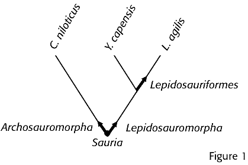
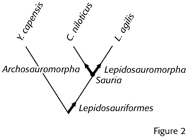
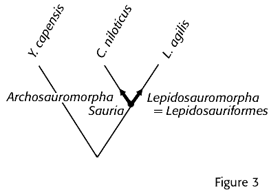

Article 11.
Specifiers and Qualifying Clauses
11.1.
Specifiers are species, specimens, or apomorphies cited in a phylogenetic definition of a name as reference points that serve to specify the clade to which the name applies. All specifiers used in node-based and branch-based definitions of clade names, and one of the specifiers used in apomorphy-based definitions of clade names, are species or specimens. The other specifier used in an apomorphy-based definition of a clade name is an apomorphy.
Note 11.1.1.
When a species is cited as a specifier, the implicit specifier is the type of that species name (if a type has been designated) under the appropriate rank-based code.
Therefore, whichever currently accepted species includes the type specimen of the species name cited in the definition is the specifier.
If the species name originally cited as a specifier is no longer accepted, either because the species has been recircumscribed or assigned to a different genus under rank-based nomenclature, then the species name with which it has been synonymized automatically becomes the name of the specifier species.
However, the type of the name originally used as a specifier, rather than that of the currently accepted species name, remains the implicit specifier.
If the type of a specifier species name changes under the rank-based code, the implicit specifier changes accordingly.
A species may be used as a specifier even if it lacks a type.
Note 11.1.2.
Although subordinate clades cannot be specifiers, they may be cited in a phylogenetic definition of the name of a more inclusive clade to clarify the phylogenetic position of a specifier.
Example 1.
Aves could be defined as "the crown clade originating with the most recent common ancestor of Struthio camelus Linnaeus 1758 (Ratitae), Tinamus major Gmelin 1789 (Tinamidae), and Vultur gryphus Linnaeus 1758 (Neognathae)." Alternatively, the definition could be worded "the crown clade originating with the most recent common ancestor of Ratitae (Struthio camelus Linnaeus 1758), Tinamidae (Tinamus major Gmelin 1789), and Neognathae (Vultur gryphus Linnaeus 1758)." In both definitions, Ratitae, Tinamidae and Neognathae are not specifiers; they simply provide additional information about the phylogenetic position of the true specifiers.
11.2.
An internal specifier is a species, specimen or apomorphy that is explicitly included in the clade whose name is being defined; an external specifier is a species or specimen that is explicitly excluded from it. All specifiers in apomorphy-based, standard node-based and apomorphy-modified node-based definitions are internal, but branch-based and branch-modified node-based definitions always have at least one specifier of each type.
11.3.
When a species is used as a specifier, the author(s) and publication year of the species name must be cited.
Note 11.3.2
The ICBN and ICZN differ in their conventions for citing authorship and publication year when the author of the currently accepted binominal combination differs from the author of the epithet (i.e., the author of the original combination). Because the purpose of citing authorship and year is to identify the specifiers unambiguously, the conventions used by the appropriate rank-based code should be used for species names governed by that code.
11.4.
When a type specimen is used as a specifier, the species name that it typifies and the author(s) and publication year of that species name must be cited.
Recommendation 11.4A.
The use of specimens that are not types as specifiers is strongly discouraged. This should be done only under the following two circumstances:
1) if the specimen that one would like to use as a specifier cannot be referred to a named species, so that there is no type specimen that could be used instead; or
2) if the clade to be named is within a species.
Recommendation 11.4B.
If a specimen that is not a type is used as a specifier in the first situation described in Rec. 11.4A, and a species that includes this specimen is subsequently named under the appropriate rank-based code, this specimen should be chosen as the type of the species name.
11.5.
When a specimen that is not a type is used as a specifier in a phylogenetic definition, the institution or collection in which the specifier is conserved must be identified, as well as the collection number or other information needed to establish the identity of the specimen.
11.6.
When a specimen that is not a type is used as a specifier in a phylogenetic definition, a brief description of the specimen must be provided, sufficient to convey a mental image and distinguish the specimen from organisms with which it might be confused.
11.7.
In the interest of consistency with the rank-based codes, it would be desirable for a clade whose name is converted from a typified name under a rank-based code, or is derived from the stem of a such a name, to include the type of the that name. Therefore, when a clade name is converted from a preexisting typified name or is a new or converted name derived from the stem of a typified name, the definition of the clade name must use the type species of that preexisting typified name or of the genus name from which it is derived (or the type specimen of that species) as an internal specifier.
Example 1.
If the preexisting name Magnoliales, which is based on the genus name Magnolia, is converted to a clade name, its definition must use the type species of Magnolia or its type specimen as an internal specifier.
Example 2.
If Ajugina, which is not a preexisting name but is based on the preexisting genus name Ajuga, is adopted as the name of a clade, the definition of Ajugina must use the type species of Ajuga or its type specimen as an internal specifier.
Example 3.
If the preexisting subgenus name Calosphace is converted to a clade name, the definition of Calosphace must use the type species of subgenus Calosphace or its type specimen as an internal specifier.
Recommendation 11.7A.
If it is questionable whether a type species of a preexisting name is part of the clade to be named, then the type species should not be used as a specifier (see Rec. 11B), and neither that preexisting name nor a name derived from the stem of that name should be defined as referring to that clade.
Example 1.
If it is questionable whether the type species of Magnolia belongs to a clade that is to be named, this species should not be used as a specifier, and the clade should not be named Magnolia, Magnoliales or any other name based on the stem of the name Magnolia.
Note 11.7A.1.
Failure to include the type species of a preexisting name in an analysis is not, in itself, reason to invoke Rec. 11.7A. There may be evidence suggesting that another species that was included in the analysis shares a recent common ancestor with the type.
Recommendation 11.7B.
If it is questionable whether the type specimen of a preexisting name belongs to the clade to be named (e.g., because of the fragmentary nature of the specimen), then that preexisting name (or its type) should not be used as a specifier (see Rec. 11C), and the corresponding name should not be converted to a clade name.
Example 1.
Under the ICBN, the names Cordaites, Cordaixylon, and Mesoxylon refer to genera of extinct seed plants. The types of the latter two names are fossil stems, but it has been possible to reconstruct whole plants that belonged to each genus. The oldest of the three names, Cordaites, is typified by fossil leaf material that could have been produced by a member of either Cordaixylon or Mesoxylon. If a clade is named that includes plants with Cordaixylon-type stems but not Mesoxylon-type stems, the type species of Cordaites should not be cited as a specifier because its type specimen may not belong to this clade, and the clade should not be named Cordaites.
11.8.
In order for the reference phylogeny to be useful, either the specifiers used in the phylogenetic definition must be included in the reference phylogeny (see Art. 9.6) or the protologue must include a statement indicating how the specifiers are related to the taxa that are included in the reference phylogeny.
Note 11.8.1.
An acceptable mechanism for indicating how the specifiers are related to the taxa in the reference phylogeny is to cite a taxon name that is labeled on the reference phylogeny parenthetically after the name of the specifier in the definition.
Note 11.8.2.
If a clade name is converted from a typified name under a rank-based code, or is derived from the stem of such a name, and the type of that name is not included in the reference phylogeny, the type must still be used as an internal specifier (see Art. 11.7), and its relationship to taxa included in the reference phylogeny must be stated in the protologue.
11.9.
In order to restrict the application of a name with respect to clade composition (i.e., under alternative hypotheses of relationship), phylogenetic definitions may include qualifying clauses specifying conditions under which the name cannot be applied to any clade (see Example 1). It is also possible to restrict clade composition under alternative hypotheses of relationship through careful wording of definitions (see Examples 2 and 3).
Example 1.
The name Pinnipedia is traditionally applied to a group composed of sea lions (Otariidae), walruses (Odobenidae), and seals (Phocidae). However, under some phylogenetic hypotheses, the sister group of one or more of these taxa is a group of terrestrial carnivorans. If the name Pinnipedia is defined as "the clade originating with the most recent common ancestor of Otaria byronia de Blainville 1820, Odobenus rosmarus Linnaeus 1758, and Phoca vitulina Linnaeus 1758, provided that it possessed flippers homologous with those in the aforementioned species," then the name would not be applicable to any clade in the context of phylogenetic hypotheses in which the most recent common ancestor of these species was inferred not to have had flippers. The phrase "provided that it possessed flippers homologous with those in the aforementioned species" is a qualifying clause. (However, the apomorphy "flippers" should be illustrated or described because it is a complex apomorphy (see Recs. 9D, 9E).)
Example 2.
Suppose the name Lepidosauriformes were defined as referring to the most inclusive clade containing Lacerta agilis Linnaeus 1758 but not Youngina capensis Broom 1914 (Fig. 1).

Further suppose that all three of these taxa were considered to be included within the larger clade Lepidosauromorpha (Clade(Lacerta agilis not Crocodylus niloticus Laurenti 1768)), which was considered the sister group of the clade named Archosauromorpha (Clade(Crocodylus niloticus not Lacerta agilis)). If Youngina capensis turned out to be outside of the clade originating with the most recent common ancestor of Lacerta agilis and Crocodylus niloticus (a node-based clade named Sauria), then the name Lepidosauriformes would refer to a clade more inclusive than the clade named Lepidosauromorpha, reversing the former hierarchical relationships of the names (Fig. 2).

In order to prevent these names from reversing their hierarchical relationships, the name Lepidosauriformes could be defined as "the most inclusive subclade of Sauria (Clade(Lacerta agilis and Crocodylus niloticus)) containing Lacerta agilis but not Youngina capensis," in which case Lepidosauriformes would become a synonym of Lepidosauromorpha (rather than the name of a more inclusive clade) in the context of the new phylogenetic hypothesis (Fig. 3).

The first definition leaves the application of the name Lepidosauriformes unrestricted; the second definition restricts its application to a subclade of Sauria. However, the same restriction can be achieved by defining Lepidosauriformes as the most inclusive clade containing Lacerta agilis but not Youngina capensis or Crocodylus niloticus.
Example 3.
If a name is defined through a branch-based definition with more than one internal specifier, and one internal specifier is later found to share a more recent common ancestor with the external specifier than with the other internal specifier, the definition does not apply to any clade. For example, suppose the name Halecostomi had been defined as referring to the most inclusive clade containing Amia calva Linnaeus 1766 and Perca fluviatilis Linnaeus 1758 but not Lepisosteus osseus Linnaeus 1758. And suppose that subsequent analyses indicated that Lepisosteus osseus and Perca fluviatilis share a more recent common ancestor with one another than either does with Amia calva. If so, then there is no clade that fits the definition of Halecostomi (because there is no clade that includes both Amia calva and Perca fluviatilis but not Lepisosteus osseus), and that name cannot be used in the context of the accepted phylogeny.
11.10.
Provided that a clade name is acceptable, it remains eligible for use even if there is no clade that fits its definition under a subsequently proposed phylogenetic hypothesis. The name would not be used in the context of that hypothesis, but it would remain eligible for future use under any hypotheses in which there is a clade that fits its definition.
Example 1.
Although the name Pinnipedia is inapplicable under certain phylogenetic hypotheses if the qualifying clause in Art. 11.9, Example 1 is used, the name remains eligible for use under other hypotheses.
Recommendation 11A.
Definitions of converted clade names should be stated in a way that attempts to capture the spirit of traditional use to the degree that it is consistent with the contemporary concept of monophyly. Consequently, they should not necessitate, though they may allow, the inclusion of subtaxa that have traditionally been excluded from the taxon, as well as the exclusion of subtaxa that have traditionally been included in the taxon. To accomplish this goal, internal specifiers of converted clade names should be chosen from among the set of taxa that have been considered to form part of a taxon under traditional ideas about the composition of that taxon, and they should not include members of subtaxa that have traditionally been considered not to be part of the taxon.
Example 1.
The name Dinosauria was coined by Owen for the taxa Megalosaurus, Iguanodon, and Hylaeosaurus, and traditionally the taxon designated by that name has included these and certain other non-volant reptiles. It has not traditionally included birds. Although birds are now considered part of the dinosaur clade, the name Dinosauria should not be defined using any bird species as internal specifiers. Such a definition would force birds to be dinosaurs, thus trivializing the question of whether birds are dinosaurs. Instead, internal specifiers should be chosen from among taxa that have traditionally been considered dinosaurs; e.g., Megalosaurus bucklandii Mantell 1827, Iguanodon bernissartensis Boulenger in Beneden 1881, and Hylaeosaurus armatus Mantell 1833.
Note 11A.1
Traditional use may refer to early or recent traditions. Because it is not always possible to be faithful to all traditions simultaneously, which tradition is most important to maintain is left to the discretion of the author of the converted name.
Recommendation 11B.
If there is reason to question that a species is a member of a particular clade, that species should not be used as a specifier in the definition of the name of that clade.
Recommendation 11C.
It follows from Rec. 11B that phylogenetic definitions of clade names should not use as specifiers species whose type specimens are ambiguous (e.g., because they are lost or fragmentary). Because they are commonly based on ambiguous types, ichnotaxa (taxa based on the fossilized work of organisms, including fossilized trails, tracks, and burrows; ICZN [1999] glossary, Art. 1.2.1), ootaxa (taxa based on fossilized eggs), and morphotaxa (fossil taxa that, for nomenclatural purposes, comprise only the parts, life history stages, or preservational states represented by the corresponding nomenclatural types; ICBN [2006] Art. 1.2) should not be used as specifiers. When this recommendation is combined with Art. 11.7, it follows that clade names should not be based on the names of ichnotaxa, ootaxa, or morphotaxa.
Recommendation 11D.
In a node-based definition, it is best to use a set of internal specifiers that includes representatives of all subclades that credible evidence suggests may be basal within the clade being named, unless doing so would be contrary to Rec. 11A and/or 11B. Constructing a node-based definition in this way will reduce the chance that, under a new phylogenetic hypothesis, the name will refer to a less inclusive clade than originally intended.
Recommendation 11E.
In a branch-based definition, it is best to use a set of external specifiers that includes representatives of all clades that credible evidence suggests may be the sister group of the clade being named. Constructing a branch-based definition in this way will reduce the chance that, under a new phylogenetic hypothesis, the name will refer to a more inclusive clade than originally intended.
Recommendation 11F.
If it is important to establish two names as applying to sister clades regardless of the phylogeny, reciprocal branch-based definitions should be used in which the single internal specifier of one is the single external specifier of the other, and vice versa. To establish a name as applying to the larger clade composed of those two sister-clades, the name of the former should be given a node-based definition using the same two internal specifiers (Example 1). A similar approach may be used to establish two names as referring to crown clades that are each other's closest extant relatives by using reciprocal branch-modified node-based definitions (Example 2).
Example 1.
If one wishes to define the names Saurischia and Ornithischia such that they will always refer to sister clades, Saurischia might be defined as the most inclusive clade containing Megalosaurus bucklandii von Meyer 1832 but not Iguanodon bernissartensis Boulenger in Beneden 1881, and Ornithischia would be defined as the most inclusive clade containing Iguanodon bernissartensis but not Megalosaurus bucklandii. To stabilize the name Dinosauria as referring to the clade comprising Saurischia and Ornithischia, Dinosauria should be defined as the least inclusive clade containing Megalosaurus bucklandii and Iguanodon bernissartensis.
Example 2.
If one wishes to define the names Lamioideae and Scutellarioideae such that they will always refer to crown clades that are each other's closest extant relatives, Lamioideae might be defined as the most inclusive crown clade containing Lamium purpureum L. 1753 but not Scutellaria galericulata L. 1753, and Scutellarioideae would be defined as the most inclusive crown clade containing Scutellaria galericulata but not Lamium purpureum.
Recommendation 11G.
Clade names created by adding certain prefixes or suffixes to another clade name (the base name) should be defined in a manner consistent with the hierarchical relationships implied by the prefix or suffix and the phylogenetic definition of the base name (if established), unless doing so would be inconsistent with the predominant current use of a preexisting name.
Example 1.
If preexisting names Parahebe and Hebe are converted, the internal specifiers of each name should not include any member of the other clade, but this alone will not ensure the mutual exclusivity implied by the name Parahebe. Mutual exclusivity can be ensured by using the type of each name as an external specifier for the other name, or by including a qualifying clause making the name Parahebe inapplicable in the context of any phylogeny in which the two clades are not mutually exclusive. However, neither of these approaches should be taken if the accepted usage (at the time when the definition is prepared) treats Hebe and Parahebe as nested.
Note 11G.1.
The following prefixes and suffixes imply greater inclusiveness than the base name: Holo-, Pan-, -formes, -morpha. The following prefixes imply lesser inclusiveness than the base name: Eo-, Eu-, Neo-, Proto-. The following prefixes imply mutual exclusivity with the base name: Pseudo-, Para-. These are not intended to be exhaustive lists.